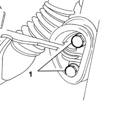
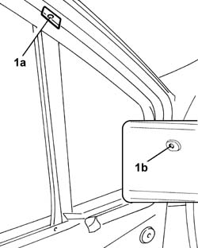
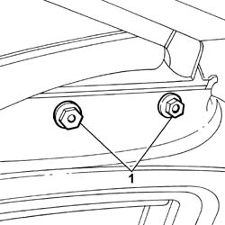
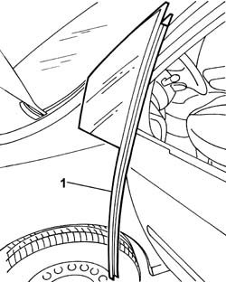
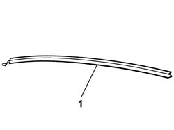

7005D18 FRONT SIDE DOOR DESCENDING WINDOW GLASS CHANNEL R R
- Path
- Procedures > 70 FITTINGS > 7005 PASSENGER COMPARTMENT FRONT SIDE DOORS > 7005D FRONT SIDE DOOR WINDOW GLASSES > 7005D18 FRONT SIDE DOOR DESCENDING WINDOW GLASS CHANNEL R R
- Kind
- repair procedure (removal / refitting; the operation number is the code)
- Applies to
- all engines; all production periods
- Interactive page
- https://sloeber94.github.io/elrnDB-fUlss/en/#/179007666
Applies to: all engines; all production periods
 Removing
Removing
 Refitting
RefittingOp. 5530B56 BATTERY DRIP TRAY COVER - R.R.
- Disconnect the negative battery terminal.
Op. 7040E24 LOWER COURTESY LIGHT INDOOR PANEL - R+R
Op. 7005E10 FRONT SIDE DOOR INNER PANEL - R R FOR REPLACEMENT
- Detach the rear view mirror.
Op. 7005D26 FRONT SIDE DESCENDING WINDOW GLASS SCRAPER (OUTER) R R
- Loosen the bolts from the bodyshell pillar to improve the opening.

Applies to: all engines; all production periods
1. Using a drill fitted with a suitable size helical point, remove the top and the bottom rivets fastening the window guide channel.

Applies to: all engines; all production periods
1. Undo the nuts fixing the descending window guide channel for the window frame.

Applies to: all engines; all production periods
1. Remove the single fixed window for the front side door complete with descending window channel.

Applies to: all engines; all production periods
1. Remove the descending window channel from the single fixed window.

Applies to: all engines; all production periods
Refitting
Removing- Fit the descending window channel for the single fixed window.
- Fit the single fixed window, complete with descending window channel, in the front door.
- Tighten the nuts fixing the descending window guide channel for the window frame to torque.
- Using a riveter with suitable size new rivets, fix the ascending window guide channel.
- Tighten the bodyshell pillar bolts.
Op. 7005D26 FRONT SIDE DESCENDING WINDOW GLASS SCRAPER (OUTER) R R
- Reattach the rear view mirror.
Op. 7040E24 LOWER COURTESY LIGHT INDOOR PANEL - R+R
Op. 7005E10 FRONT SIDE DOOR INNER PANEL - R R FOR REPLACEMENT
- Connect the negative battery terminal.
Topics linked from this page (5)
- 5530B56 BATTERY DRIP TRAY COVER - R.R.
- 7005D26 FRONT SIDE DESCENDING WINDOW GLASS SCRAPER (OUTER) R R
- 7005E10 FRONT SIDE DOOR INNER PANEL - R R FOR REPLACEMENT
- 7005M14 SWITCH UNIT CONTROLLING ELECTRIC WINDOWS REAR VIEW MIRRORS AND DOOR LOCK ON DRIVERS SIDE FRONT DOOR R R
- 7040E24 LOWER COURTESY LIGHT INDOOR PANEL - R+R